Jl. Raya Benteng Portugis RT 08 RW 05 Desa Banyumanis, Donorojo,Jepara, Jawa Tengah 59454
Lihat Peta 
Assalamualaikum Warohmatullahhi Wabarakatuh
Tiada kata yang lebih pantas untuk kita ucapkan selain memanjatkan puji dan syukur kehadirat Allah SWT yang telah melimpahkan kepada kita segala rahmat, taufiq, dan hidayahnya. Sehingga kita masih dapat menikmati anugrah terindahnya yang ada di muka bumi ini.
Sholawat serta salam mudah-mudahan tetap tercurahkan kepada junjungan Nabi besar kita Muhammad SAW yang telah menunjukkan kita dari jalan yang gelap gulita menuju jalan jalan yang terang benderang.
Selanjutnya saya sampaikan terima kasih yang sebesar-besarnya atas dukungan dukungan juga kepercyaan bapak/ibu juga saudara-saudara yang telah memberikan kesempatan kepada kami untuk mengembun tugas yang mungkin tidaklah ringan. Namun dengan dorongan dan motivasi yang telah ibu/bapak juga rekan-rekan berikan kepada kami, Insyaallah kami tidak akan menyia-nyiakan kesempatan yang telah ibu/bapak berikan kepada kami ini.
Atas nama Pembina Yayasan Panti Asuhan Al Muzakki Banyumanis, kami ucapkan terima kasih yang sebesar-besarnya kepada semua donatur, teman/rekan, muslimin/muslimat dan seluruh masyarakat sebangsa dan setanah air Indonesia tercinta ini dan Dari berbagai Luar Negeri khususnya para pengguna internet/online yang masih mempunyai semangat dalam pembinaan anak anak yatim piatu di Indonesia ini. Semoga segala apa yang saudara lakukan dengan mendonaturkan sebagian rizki untuk menyantuni anak anak yatim di yayasan panti asuhan Al Muzakki Banyumanis ini akan di ridhoi oleh Allah SWT, semoga akan di gantikan dengan rezeki yang berlimpah ruah dan berlipat ganda yang datangnya tak diduga duga.amin…
Dalam hadist Rasulullah SAW berkata, ‘’ Bila engkau ingin agar hati menjadi lembut dan damai dan anda mencapai keinginanmu, sayangilah anak yatim, usaplah kepalanya, dan berilah dia makanan seperti engkau makan. Bila engkau lakukan, hatimu akan tenang serta lembut dan keinginanmu akan tercapai’’(HR Thabrani).
Hadis tersebut memberikan petunjuk kepada umat islam bahwa salah satu sarana untuk menenangkan batin dan mendamaikan hati ini adalah mendekati anak yatim, terlebih yatim piatu. Mengusap kepala mereka( Menyayangi ) dan memberinya makan dan minum merupakan simbol kepedulian dan perhatian serta tanggung jawab terhadap anak yatim/piatu.
Berbuat baik terhadap anak yatim/piatu bukanlah sekedar turut membantu menyelesaikan lapar dan dahaga sosialnya. Tetapi, di sisi lan pebuatan itu merasuk ke dalam batin, menentramkan hati, dan mendamaikan perasaan orang yang memberi perhatian kepada mereka. Berbagai ayat Al Qur’an dan hadist Nabi banyak membicatrakan betapa mulianya kedudukan anak yatim/piatu di mata Allah SWT .
Wassalamualaikum Warahmatullahi Wabarakatuh
Pembina Yayasan Panti Asuhan Al Muzakki
H. Ahmad Subiyono Anhar